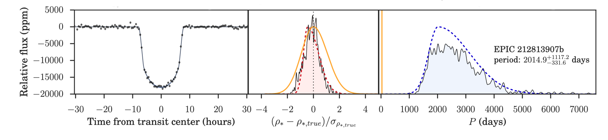

Single Transits in K2
How can we constrain the period of a planet if we only see it transit once?
We need strong, reliable information of another kind---a constraint on the density of the planet's host star. We can use that density information, together with the duration of the planet's transit, to constrain the orbital period.
With Néstor Espinoza, Rafael Brahm, and Andrés Jordán, I applied this method to twelve single transiters from K2, improving on the precision of previous period estimates roughly threefold. See our paper for more details!